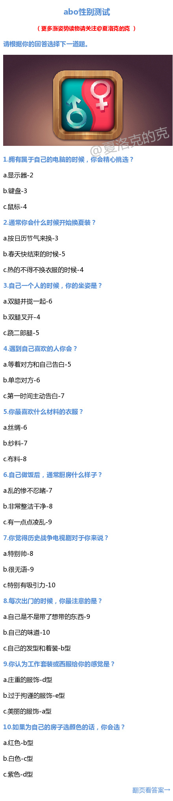
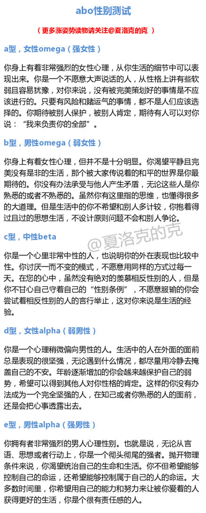

E//@沉没的浣熊啊宠物中的亡者:D. 几乎就到达了E. 第八道题时被难住了，出门时可谓什么都不在乎，懵懂地一再离开... //@Dreamwalker_VII:e//@柯晗-人间旅行: 我……男alpha？
@夏洛克的克:
【abo性别测试】最近特别火的abo性别测试，在某种程度上性别会被分为女性omega（强女性）、男性omega（弱女性）、中性beta、女性alpha（弱男性）、男性alpha（强男性），先测完图1，再对照图2的答案，很多童鞋测了之后都说准翻了！你是哪一种
- 
- 